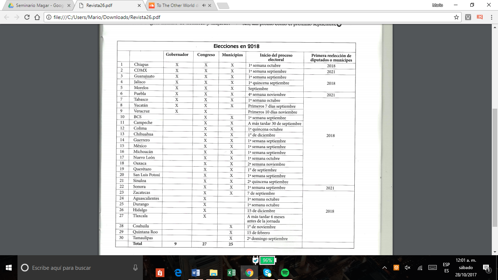

Juntos y reelectos
por
Alberto Consejo Vargas1
Uno de los ecos de la reforma político-electoral de 2014 es la concurrencia de las jornadas electorales locales con la federal; si bien esta tendencia había comenzado desde a reforma de 2007-2008, hace tres años en el inciso n) de la fracción iv del artículo 116 de la Constitución federal se estableció la obligación de que por lo menos una de las elecciones locales de cada entidad federativa coincida con cualquiera de las federales. El resultado fue que la gran mayoría de las entidades optó por hacer coincidir la totalidad de sus elecciones con aquellas.
Así, el primer domingo de julio2 de 2018 no sólo se votará por presidente y ambas cámaras del Congreso de la Unión, sino que, salvo en Nayarit y Baja California, habrá elecciones locales en todas las entidades de la República.3
Para ilustrar la tendencia, baste decir que en la elección federal de 2015 la concurrencia alcanzó a 17 entidades federativas y que el próximo año serán 30. Esto significa que, ya sean en conjunto o por separado, según corresponda, en nueve entidades habrá elecciones de titular del Ejecutivo, en 27, de Congreso local y en 26, de ayuntamiento. Más específicamente en ocho entidades habrá elecciones totales de gobernador (o jefe de gobierno), Congreso local (incluida la primera Legislatura del Congreso de la Ciudad de México) y municipios (incluidas las 16 alcaldías de la CDMX, que dejarán de ser jefaturas delegacionales). En Veracruz habrá elección sólo de gobernador y Congreso. En 14 estados habrá intermedias de Congresos y ayuntamientos (Baja California Sur, Campeche, Colima, Chihuahua, Guerrero, San Luis Potosí, Sinaloa, Sonora y Zacatecas). De Congreso solamente, en Aguascalientes, Durango, Hidalgo, y Tlaxcala. De ayuntamientos, únicamente, en Coahuila, Quintana Roo y Tamaulipas (véase la tabla 1).

Figura 1: Elecciones en 2018
El proceso para establecer las coincidencias ha sido largo debido a que para conseguir el objetivo se han modificado, por reforma constitucional local, periodos de ejercicio tanto del Poder Ejecutivo (es el caso de los gobiernos vigentes de Puebla o Veracruz, cuya gestión transitoria será de dos años, al haber sido electos el año pasado para concluir el que viene), como de Congreso local y ayuntamientos. Todo apunta a que cada tres años, a partir de 2018, se establezca ya no el "super" sino el "mega domingo electoral" donde se renueven tanto los poderes federales como los locales (Ejecutivo y Legislativo) y las autoridades más próximas a la ciudadanía (ayuntamientos y alcaldías por vez primera en la CDMX).
Serán excepción los estados que queden fuera de estos procesos en algunos de sus elecciones, como el estado de México con su elección de gobernador en solitario en el año previo a la elección presidencial, mismo caso de Coahuila e Hidalgo (dos años antes) y Nayarit por última vez es este año.4 En Veracruz el periodo del gobernador y Congreso se empatará con el presidente de la República y diputados federales en 2018, no así ayuntamientos, cuyo periodo constitucional es de cuatro años;5 su elección si acaso coincidirá con la federal una vez cada doce años.
Esta disposición de juntar las elecciones atiende desde luego a economías de escala de partidos por lo que hace a la organización de campañas y las sinergias entre sus liderazgos locales y nacionales, pero también a evitar la saturación de la ciudadanía con elecciones y campañas todos los años. Presupone, eso sí, tremenda complejidad para las autoridades electorales, principalmente el INE en tareas tan esenciales como la partición de funcionarios de casilla, la asignación de prerrogativas en radio y televisión, y la fiscalización de alrededor de 39 mil candidatos que contendrán en 2018.6 El Tribunal Electoral del Poder Judicial de la Federación igualmente se enfrenta a titánicas tareas de resolución en periodos muy breves sobre la protección de los derechos político-electorales de miles de aspirantes a candidatos y respecto de los recursos que, en proceso electoral, regularmente interponen los partidos políticos contra los acuerdos de OPLE y el INE.
1 Reelecciones
Para complicar el de suyo intrincado sistema mexicano, la reforma de 2014, además de centralizar muchas de las funciones electorales en el INE, instauró la reelección o "elección consecutiva", eufemismo usado en la Constitución federal debido a esa cuita histórica del "sufragio efectivo, no reelección" (en su origen referido, como sabemos, al presidente de la República y los gobernadores).
Por virtud de la mencionada reforma, se podrá elegir a los diputados federales y senadores hasta por cuatro y dos periodos consecutivos, respectivamente, es decir, hasta por doce años en ambos casos (art. 59 CPEUM).
La elección consecutiva de diputados locales emula el tope de la elección federal de diputados: se permite hasta por cuatro periodos consecutivos (art. 116 CPEUM, fracción II, segundo párrafo), según, claro, lo que determine la Legislatura local.
Para los municipios la Constitución federal (art. 155, fracción II, segundo párrafo) establece que los presidentes municipales, regidores y síndicos podrán aspirar a sólo dos elecciones consecutivas (o una reelección) por el mismo cargo y con la condicionante de que el periodo de mandato de los ayuntamientos de que se trate sea de tres años. La Constitución dicta igualmente que la postulación sigue siendo potestad de los partidos políticos y que para ser impulsado por otro se requiere haber renunciado al primigenio antes de haber cursado la mitad de su mandato.
En 2017 tendremos cuatro procesos electorales: en Coahuila y Nayarit, totales (gobernador, diputados y ayuntamiento), en el estado de México de gobernador y en Veracruz de ayuntamientos
En Coahuila, por sentencias de los tribunales electorales se permitió que una regidora de Monclova, cuyo encargo iba de 2014 a 2017, contienda por la presidencia municipal para el periodo de 2018 a 2021. Tras impugnarse tal candidatura, el Tribunal Electoral local resolvió, y así fue confirmado por la Sala Regional Monterrey y la Sala Superior del TEPJF,7 que no se trataba de una reelección porque contendería por otro cargo. Y así lo dispone la Constitución local, no se considera reelección cuando quienes hayan ocupado cargos de regidor o síndico contiendan por la presidencia municipal.8 Por otra parte, a pesar de ser posible constitucional y legalmente, ningún diputado solicitó al Instituto Electoral registro para la reelección de, por cierto, ni reglamentada estaba en el OPLE.
En Nayarit, no faltando a su costumbre, la Sala Superior del TEPJF revocó el acuerdo del OPLE por el cual fundamentaba en la Constitución federal que no era posible la reelección de los munícipes en funciones, sobra la base de que en 2017 serían electos para un periodo de cuatro años, por lo que no eran cargos reelegibles por mandato constitucional. El TEPJF falló sobre la base del principio pro persona y la confirmación, vía la acción de inconstitucionalidad, de la Suprema Corte, de que el periodo transitorio de ayuntamientos por cuatro años de 2017 a 2021 era constitucional y destinado a cumplir con el empate de las elecciones locales con las federales. Por todo ello, el OPLE de Nayarit cambió el acuerdo para que todo munícipe en funciones pudiera, si así lo deseaba, reelegirse.
En Veracruz, los ayuntamientos (que es lo único que se elige este año en esa entidad), fungen constitucionalmente para periodos de cuatro años, por lo que, repetimos, no es aplicable la reelección.
2 Para 2018
Por disposición del artículo décimo primero transitorio de la reforma constitucional de 2014, los diputados federales y senadores electos en 2018 podrán reelegirse en 2021 y 2024, respectivamente; es decir, los legisladores que hoy ocupan esos cargos no son reelegibles. En cambio, la mayoría de los diputados y munícipes ahora en funciones podrán optar por la reelección en 2018, salvo en aquellas entidades en que por disposiciones transitorias la reelección no se aplicará hasta 2021, que son la CDMX, Puebla y Sonora.
No sobra decir que la elección consecutiva de diputados en la mayoría de las entidades se permitirá hasta por cuatro periodos (12 años), salvo legislaturas que optaron por una sola reelección -o dos elecciones consecutivas, seis años-; es el caso de la CDMX, Colima, Chihuahua, Oaxaca, Zacatecas, Aguascalientes, Hidalgo, Quintana Roo y Tamaulipas, Morelos optó por hasta tres periodos consecutivos (nueve años).
3 Problemas a la vista
Como se puede colegir, todas las constituciones de los estados y la gran mayoría de las respectivas leyes electorales se han modificado para reglamentar la reelección de diputados locales y munícipes (presidentes, síndicos y regidores). Dichas reformas en su gran mayoría repiten lo dispuesto por la Constitución federal, si acaso son singulares, como ya referimos, al determinar el número de elecciones consecutivas que se permite a los diputados. Igualmente lo son en el tratamiento que le dan a la elección consecutiva de candidatos independientes; algunas entidades como Jalisco, Tabasco y Baja California no admiten su reelección por medio de partidos políticos, salvo que se hayan afiliado antes de haber cubierto la mitad de su mandato. Otras entidades, como Guerrero, Zacatecas, Sonora y Coahuila, sólo permitirán la reelección de independientes en esa misma calidad con la que originalmente fueron electos.
Por otra parte, en las normas de Guanajuato, Puebla y Oaxaca se dispone que quienes hayan llegado a los extremos de los periodos consecutivos como propietarios no podrán reelegirse como suplentes; esto, para evitar la violación del espíritu de la norma y el fraude a la ley. En la Constitución de Nuevo León se establece que la reelección de presidentes municipales sea por el mismo municipio y no por otro; no obstante, nada se dice de regidores y síndicos, así que podría suponerse que a este sí se les permitirá.
Advertimos que en la mayoría de las normas locales se admite la elección consecutiva de los diputados por los principios de mayoría y de representación proporcional; en el primer caso, electos en sus distritos electorales por el voto directo de los ciudadanos; en el segundo, por los partidos y sus listas. Cabe preguntar si éste era el espíritu de la reforma, que pretendía cierta responsabilidad política del diputado o munícipe frente al electorado y no sólo frente al partido, únicamente en Guerrero se prohíbe la reelección de los diputados de representación proporcional por ese mismo principio.
Algo que no se dice en ninguna norma es si la reelección de los diputados será por la misma fórmula (propietario y suplente) por la que hayan llegado al cargo; la lógica apuntaría a que no, pues el lugar de quien busque la reelección deberá ser cubierto en el Congreso por el suplente de su fórmula. Esto no se ha regulado y se corre el riesgo de que, llegado el momento, se configuren congresos fantasma, debido a que los diputados suplentes podrían aspirar igualmente a la reelección con la misma fórmula o incluso como propietarios. Mismo caso es el de los presidentes municipales, regidores y síndicos, que en algunas entidades tienen suplentes y en otras no. La Constitución federal dispone que puedan competir por la elección consecutiva para el mismo cargo; la pregunta es si con la misma planilla. Se corre el mismo riesgo de que los ayuntamientos se vacíen y terminen manejados por funcionarios no electos.
Finalmente, advertimos otras cuestiones que creemos necesario regular, por ejemplo, qué tratamiento se dará a la paridad de género y la reelección, ¿Los partidos políticos deben postular para su elección consecutiva a igual número de hombres y mujeres? Otra: en el caso de perder la reelección, ¿se regresará al puesto de diputado o munícipe para cubrir el periodo faltante?
4 Conclusiones
Creemos que ante la novedad de la elección consecutiva que se dará en 27 entidades federativas en 2018 se ha obviado diversas complicaciones, dado que esta figura debe ajustarse al sistema electoral y a sus principios, como la certeza y la imparcialidad. Sino las atiende el legislador secundario o la autoridad electoral administrativa (INE-OPLE), como ya vimos, eventualmente quedarán en manos del TEPJF. No perdamos de vista que los diputados y munícipes en funciones, así como los partidos políticos, necesitan reglas claras ante el inminente inicio de los procesos electorales, que en su mayoría comienzan en tres meses, tan pronto como el próximo septiembre.
Nota al pie de página:
Investigador del CEPNA, S.C. Este artículo fue publicado con el título "Juntos y reelectos" en la revista Voz y voto, número 292, junio 2017. El autor nos ha dado su autorización para reproducirlo.
Por primera vez, ya que según la ley las elecciones federales son el primer domingo de junio del año que corresponda.
Nayarit empatará su jornada electoral para gobernador, diputados y ayuntamientos en 2021, cuando se remueve la Cámara de Diputados federal.
Según el decreto de reforma constitucional de Nayarit del 10 de junio de 2016, el gobernador, los diputados y munícipes tendrán un periodo de cuatro años que concluirá en 2021, para empatar sus elecciones con las intermedias federales. No habrá reelección hasta 2024, porque se aplica para los periodos de tres años de diputados y munícipes.
Mismo caso que en Hidalgo.
Estimado de candidatos a presidente, diputados federales y senadores, así como las locales de gobernador, congresos y ayuntamientos (alcaldías de la CDMX), sin contar coaliciones y con un promedio de nueve partidos o nueve candidatos por cada puesto en disputa.
El juicio de revisión constitucional del 1º de mayo de 2017, SM-JRC-7/2017 del 10 de mayo, el TEPJF confirmó la decisión de la Sala Regional Monterrey.
Inciso d), párrafo 4, artículo 114 de la Constitución de Coahuila.